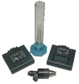

ПРОМЫВКА ФОРСУНОК ДВИГАТЕЛЯ ВАЗ-2111/2112
(проводится с применением тестера форсунок ТФМ-2 в комплекте с датчиком давления топлива)

- cпособ эффективен более чем в 50% случаев, особенно когда инжекторный двигатель не пускается по причине засоренности форсунок;
- трудоемкость в 2—3 раза меньше аналогичных неразборных способов;
- не требует нарушения герметичности топливной магистрали;
- не требует применения дорогой промывочной жидкости;
- имеет четкий критерий степени очистки форсунок по показаниям датчика давления.
Порядок операций (см. раздел 4 руководства по эксплуатации (880 kbytes) на приборы ТФМ-1 и ТФМ-2):
- Проверить степень засоренности топлива—при необходимости выполнить профилактику топливной системы (замену топлива и фильтров).
- Снять свечи зажигания двигателя.
- Подключить кабель-разветвитель (F4) тестера форсунок к жгуту форсунок электронной системы управления двигателем (ЭСУД).
- Подсоединить топливный штуцер ВАЗ от ниппеля контроля давления на топливной рампе к датчику давления топлива (в комплекте ТФМ-2).
- Выполнить электрическое подключение тестера форсунок и его кабелей по рекомендуемой схеме приложения 5.
- Провести проверку форсунок на баланс (тест «000») с замером установившегося (через 5-10 с) давления топлива до и после теста.
- Выполнить последовательно по два теста промывки (самоочистки) форсунок: «110» (повышенная частота) и «111» (плавающая частота) - одновременно для двух пар форсунок F1-F3 и F2-F4.
На время выполнения промывки форсунок злектробензонасос рекомендуем включать по команде от сканера-тестера СТМ-2 (СТМ-3.2) «УПРАВЛЕНИЕ МЕХ./РЕЛЕ ЭБН» или использовать перемычку реле электробензонасоса
- Провести повторную проверку форсунок на баланс (тест «000») с замером давления топлива до и после теста.
- Эффективность очистки форсунок достигнута, если:
- давления топлива после теста «000» падает на 100-120 кПа (контрольная цифра для ВАЗ-2112);
- расхождение падений давления топлива по форсункам F1-F4, то есть их баланс, не превышает 20 кПа.
- Если указанные контрольные цифры не достигаются, рассмотреть следующие варианты:
- повторная промывка форсунок;
- неразборный метод промывки форсунок специальной жидкостью;
- снятие форсунок с последующей их ультразвуковой очисткой;
- замена одной или нескольких форсунок.
- По окончании промывки форсунок непосредственно перед запуском двигателя необходимо продуть впускной трубопровод и цилиндры от остатков топлива, для чего:
- прокрутить двигатель стартером 2 раза по 5 сек., установить свечи зажигания;
- выполнить продувку цилиндров воздухом (при полном дросселе) 2 раза по 5 сек.
- После запуска и прогрева двигателя оценить устойчивость его работы на слух и с помощью сканера-тестера СТМ-2 (СТМ-3.2). Отрегулировать СО на холостом ходу 0,8±0,1% (для автомобилей без нейтрализатора).
Примечание. Промывку форсунок можно выполнить с помощью тестера форсунок ТФМ-1, но для контроля давления необходимо использовать манометры типа МТА-2А (МТА-2ИР) или аналогичные на 600 кПа.
На странице tfm.doc (50 kbytes) размещена статья «Портативные тестеры форсунок впрыска бензина».
Руководство по эксплуатации и паспорт на прибор ТФМ-2 в формате *.pdf можно взять здесь.
Заказ прибора ТФМ-2